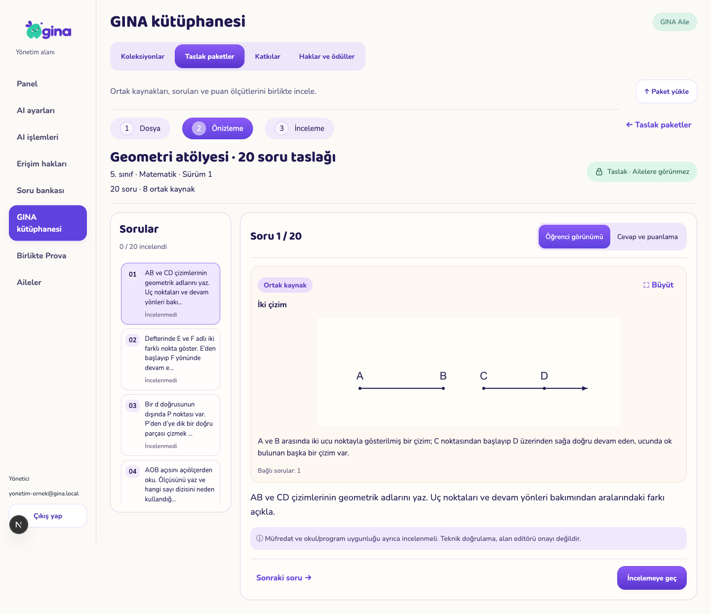
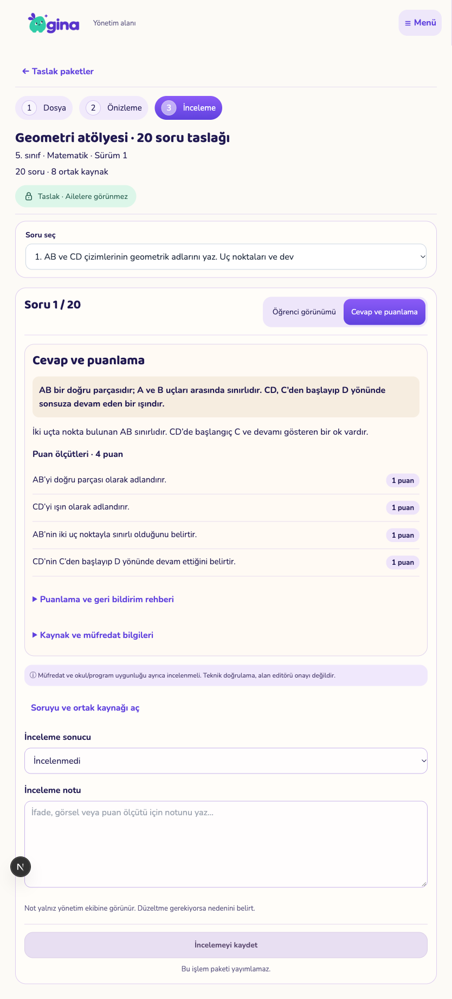
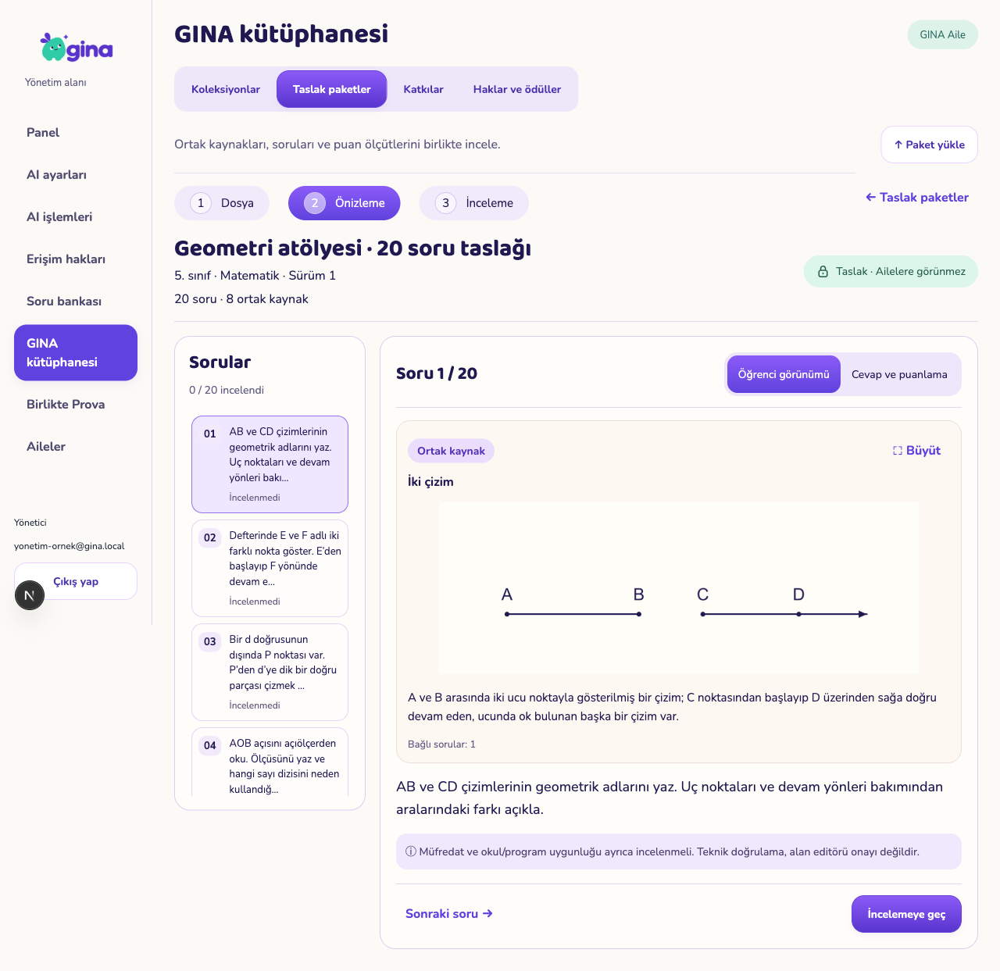
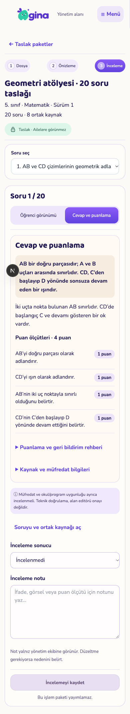
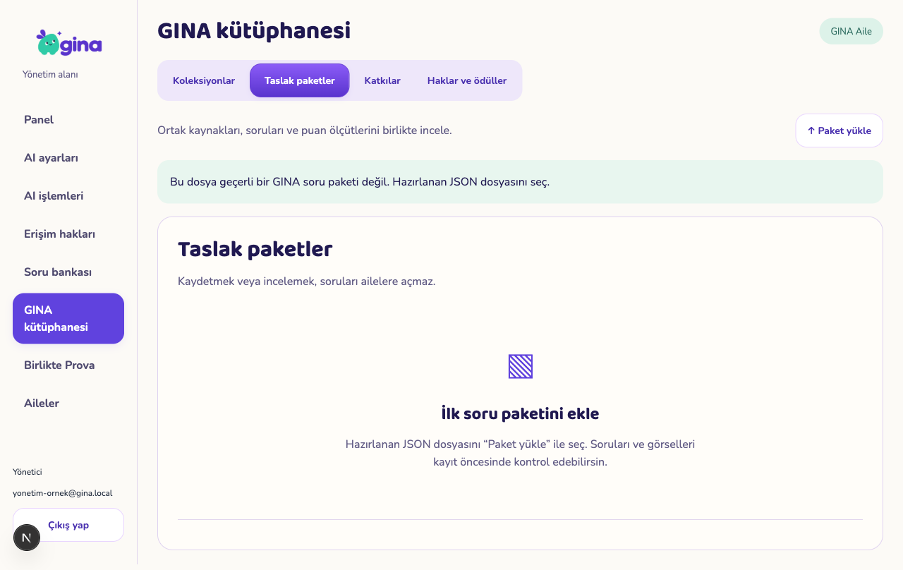
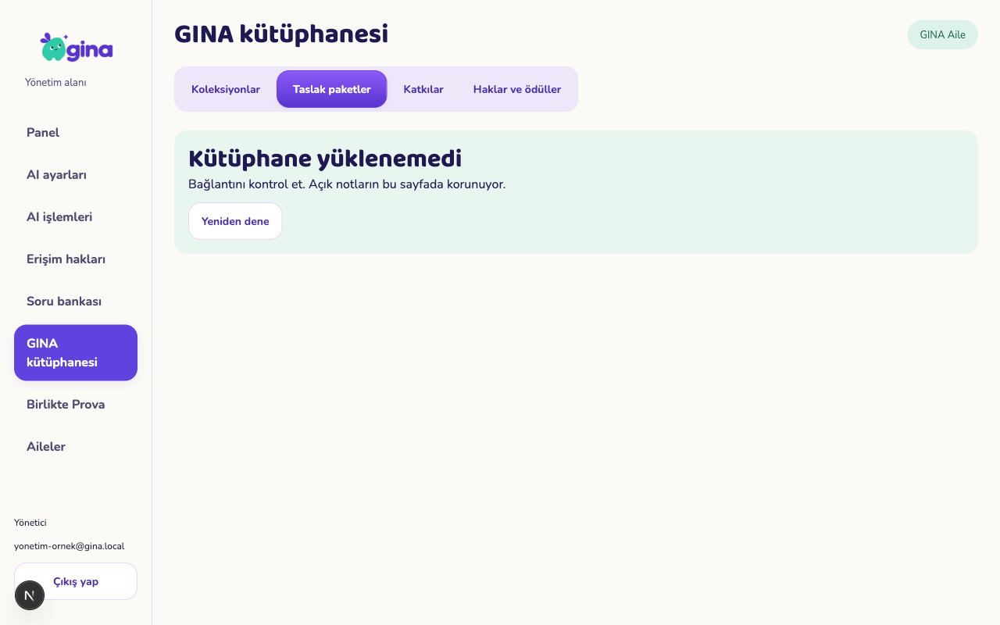

GINA — Kütüphane incelemeOnaylı tasarım
 Tasarım önerisi; gerçek uygulama değildir.
Tasarım önerisi; gerçek uygulama değildir.Masaüstü uygulaması

1440×1100 tarayıcı, tam sayfa görüntüsü.Tablet — inceleme

834×1194 tarayıcı; uzun içerik kaydırılarak erişilir.Tablet — yatay önizleme

Telefon

Boş ve hata durumları

